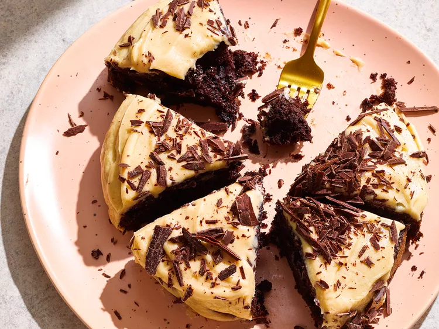

Air Fryer Mini Dark Chocolate Cake

Description
Use your air fryer to make this yummy mini dark chocolate cake topped with brown butter frosting. Brown butter frosting needs to be used immediately after preparation.
Ingredients
- cooking spray
- 1/4 cup flour, plus more for dusting cake pan
- 3 tablespoons unsweetened Dutch process cocoa powder
- 1/2 teaspoon baking powder
- 1/4 teaspoon baking soda
- 1/4 teaspoon salt
- 3 tablespoons low-fat buttermilk
- 3 tablespoons unsweetened applesauce
- 4 1/2 teaspoons canola oil
- 1 teaspooninstant espresso coffee powder
- 1/2 teaspoon vanilla extract
- 1 large egg
- 1/2 cup sugar
- 1 ounce dark chocolate, chopped, plus more for garnish